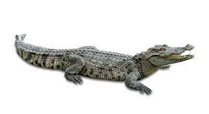

Tengo 17 años, me gradue en el Ismael Santofimio Trujillo, tengo un técnico en sistemas y presentemente estoy haciendo un tecnologo de analisis y desarrollo de información
| Animal | Especie | Foto | sonidos de los animales | perro | canino |  |
|---|---|---|---|
| Gato | Felino |  |
|
| Cocodrilo | reptil |  | |
| Cerdo | Porcino |  |
Incrustar paginas web
Permiten incrustar archivos PDF,SVG e incluso flash, una tecnologia que esta a punto de desaparecer pero que aun se puede ver de forma semirregular